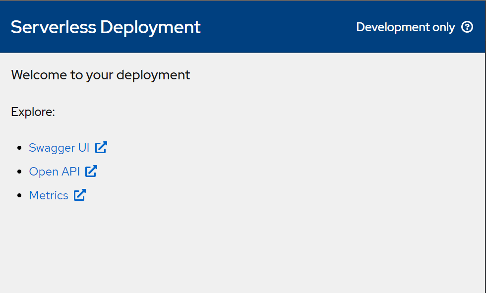

Deploying your projects
Serverless Workflow projects can be deployed to an OpenShift instance via the OpenShift integration, allowing authors to test their implementations in a live environment. Note that these deployments are not meant for production, only development purposes.
Deploying your first simple serverless project
Deploy your first Serverless Workflow project to an OpenShift instance and see it running live.
-
OpenShift integration has to be correctly configured (see how to here).
-
Start by creating a project from one of the samples. For this tutorial, the Greetings sample is recommended, as it has no external dependencies and is easy to test and comprehend. Here’s a brief explanation of what it does:
This example shows a single Operation State with one action that calls the "greeting" function. The workflow data input is assumed to be the name of the person to greet. The result of the action is assumed to be the greeting for the provided person’s name, which is added to the state’s data and becomes the workflow data output.
-
On the editor page, click on the Try on OpenShift button, then, on the context menu, click on Deploy "greetings" (Serverless Workflow);
-
A modal should appear, showing deployment options:
-
Deploy as a project: This will be available if your current workspace has a full project structure (with a single
pom.xmlfile);-
If the option is disabled: A pre-built image container that contains a Quarkus project will be used and all serverless workflow files will be placed inside
src/main/resourcesfolder of the project. In this case, it is important to make sure the serverless workflow files do not have any other dependencies because they are not included in the deployment. -
If the option is enabled: All files in the workspace will be deployed as-is, meaning no project template will be used. So it is up to you to make sure the project is deployable.
-
-
Advanced options:
-
Upload OpenAPI spec to Service Registry: After a Serverless Workflow is deployed, an OpenAPI spec is available in the deployed service. Checking this option will make the Serverless Logic Web Tools poll for this spec and upload it to your configured Service Registry (To use this option, you need to configure your Service Account and Service Registry on the Settings page. You can check how to configure it here);
-
Attach KafkaSource to the deployment: If your Serverless Workflow has an Apache Kafka event dependency then this option should be checked (To use this option, you need to configure your Service Account and Streams for Apache Kafka on the Settings page. You can check how to configure it here).
-
-
-
Leave everything unchecked and click on Confirm.
-
A toast should show the following message: Your deployment has been successfully started and will be available shortly. Please do not close this browser tab until the operation is completed. and clicking on the OpenShift deployments icon should show your deployment status. The process should take a few minutes since a build needs to be completed before the services are up.
OpenShift deployment status (success)
Checking your deployment status
After deployment is successful you can check out multiple information about your service.
-
OpenShift integration has to be correctly configured (see how to here);
-
Have a successfully deployed project.
-
The deployed project must have been deployed with the Deploy as a project option unchecked, as the Serverless deployment page is only available via the pre-built image container. If the option was checked the tool will open whatever
index.htmlfile your project provided.
-
Click on the OpenShift deployments icon to show a list of deployments;
-
If your deployment is successful (listed with a
 ) you can click on it to access the Serverless Deployment page and check on the Swagger UI interface, Open API specification and Metrics page via DashBuilder.Serverless deployment page
) you can click on it to access the Serverless Deployment page and check on the Swagger UI interface, Open API specification and Metrics page via DashBuilder.Serverless deployment page
Found an issue?
If you find an issue or any misleading information, please feel free to report it here. We really appreciate it!